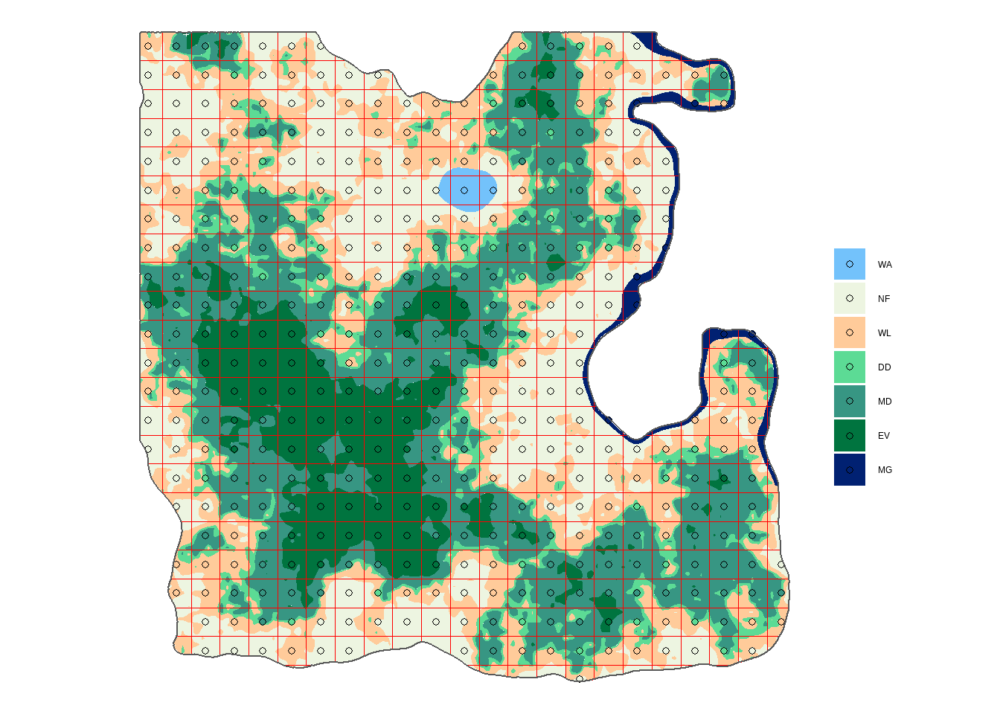

3 Systematic sampling: 4 x 4 km grid
This whole session is composed of guided exercises to reproduce the demo but this time with a 4 x 4 km grid.
You turn! Prepare sf_point4, sf_plot4, nplot4 and nplot4_total for creating a 4 x 4 km grid.
Create the grid points
Create directly:
- Points with the option
what = "center", this time thecellsizeargument will be 4000 m.
## Console
sf_points4 <- st_make_grid(sf_lc, cellsize = c(___, ___), what = "centers", offset = offset) %>%
st_intersection(sf_admin) %>%
st_as_sf()## Solution
sf_points4 <- st_make_grid(sf_lc, cellsize = c(4000, 4000), what = "centers", offset = offset) %>%
st_intersection(sf_admin) %>%
st_as_sf()- Plots by joining the land cover shapefile
sf_lc.
## Console
sf_plot4 <- sf_points4 %>%
st_join(___) %>%
mutate(lc = fct_reorder(lc, lc_id)) %>%
filter(!is.na(lc))## Solution
sf_plot4 <- sf_points4 %>%
st_join(sf_lc) %>%
mutate(lc = fct_reorder(lc, lc_id)) %>%
filter(!is.na(lc))
Visualize
Create a map with the plots over the land cover (remember we have a custom color palette pal for Louland land covers).
## Console
ggplot() +
geom_sf(data = ___, aes(fill = lc), color = NA) +
geom_sf(data = ___, aes(fill = lc), shape = 21) +
scale_fill_manual(values = ___) +
labs(fill = "", color = "") +
theme_void()## Solution
ggplot() +
geom_sf(data = sf_lc, aes(fill = lc), color = NA) +
geom_sf(data = sf_plot4, aes(fill = lc), shape = 21) +
geom_sf(data = sf_admin, fill = NA) +
scale_fill_manual(values = pal) +
labs(fill = "", color = "") +
theme_void()
Calculate the number of plot per land cover class
Start with the number of plots per land cover class using group_by() and summarise().
## Console
nplot4 <- ___ %>%
as_tibble() %>%
___(lc) %>%
___(n = n())
nplot4 ## Solution
nplot4 <- sf_plot4 %>%
as_tibble() %>%
group_by(lc) %>%
summarise(n = n())
nplot3 # A tibble: 7 x 2
lc n
<fct> <int>
1 WA 6
2 NF 172
3 WL 159
4 DD 82
5 MD 204
6 EV 103
7 MG 10Then calculate the total number of plots in forest land.
## Console
nplot4_total <- ___ %>%
filter(!(lc %in% c("WA", "NF"))) %>%
summarise(___)
nplot4_total## Solution
nplot4_total <- nplot4 %>%
filter(!(lc %in% c("WA", "NF"))) %>%
summarise(n = sum(n))
nplot4_total# A tibble: 1 x 1
n
<int>
1 313
Good job! The 4 km grid looks like exactly what we need. Let’s still design a 3 x 3 km grid to see how many forest plots it would generate and practice the R code. In the next session the exercises won’t be guided anymore, instead you will have a group of empty consoles to create, test and submit code.